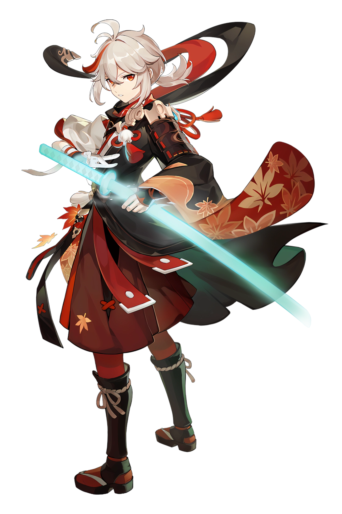
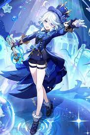

Kaedehara Kazuha (japonês: 楓かえで原はら万かず葉は Kaedehara Kazuha) é um personagem jogável Anemo em Genshin Impact. Um samurai errante do outrora famoso Clã Kaedehara, Kazuha é um membro da tripulação da Frota Crux, acolhido por Beidou depois de ser declarado um criminoso por Baal por tirar uma visão de suas mãos.[4]
Furina é uma personagem excêntrica e considerada uma superestrela pelo povo de Fontaine, graças às suas performances na Ópera Epiclese, no Tribunal de Fontaine. Por vezes, ela participa dos julgamentos e exerce sua liberdade para fazer comentários que nascem da curiosidade, sem que façam sentido lógico com os casos
